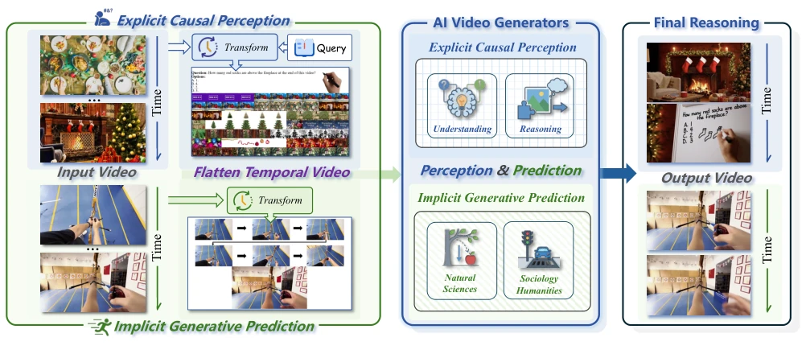
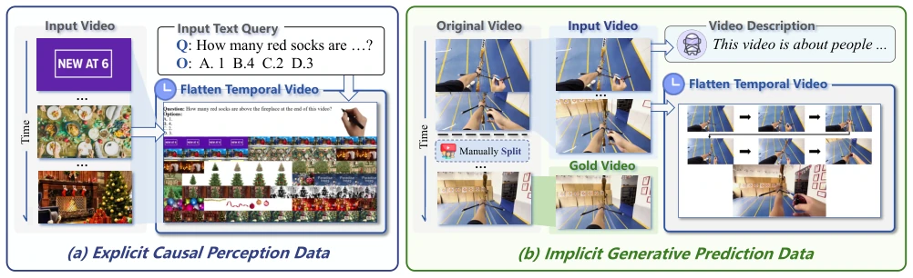
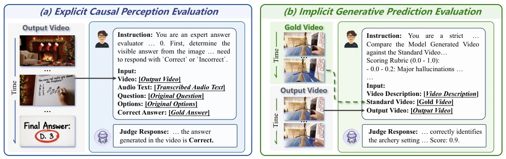
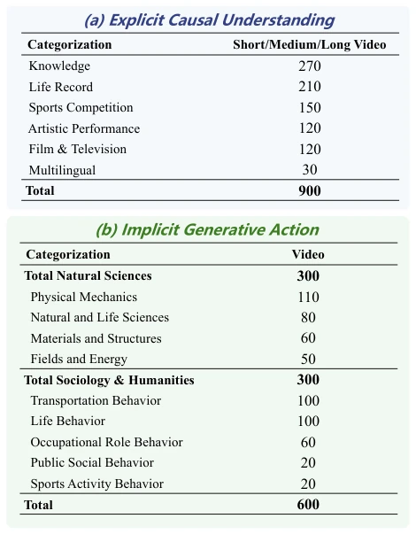
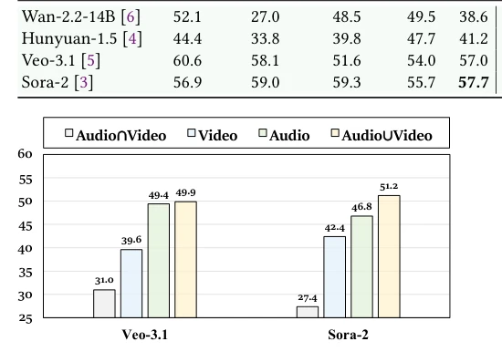
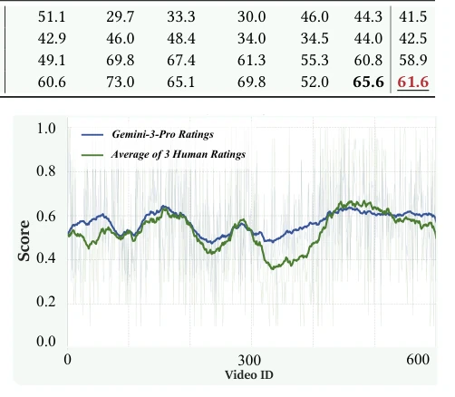
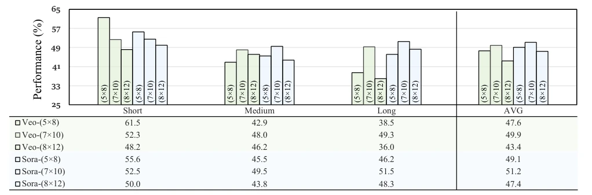
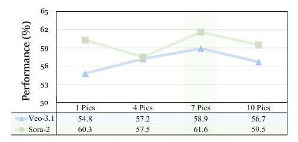

这篇论文给“视频生成即世界模型”的狂热泼了盆冷水。虽然 Sora-2 和 Veo-3.1 能生成逼真的物理动态，但论文犀利地指出它们可能只是在“像素级模仿”而非“因果理解”。最讽刺的是“音画分离”现象：模型嘴上说着正确的因果逻辑，画出来的视频却全是幻觉。CGDJ 框架虽然设计巧妙，但依赖 MLLM 作为裁判本身就有黑盒风险。不过，它确实揭示了当前开源模型在显式推理上的崩塌，以及闭源模型在物理规律内化上的不足。它重新定义了“Thinking in Video”，强调视频不仅是输出，更是构建和验证因果思维的媒介，挑战了简单的“世界模拟器”叙事。
This paper pours cold water on the hype of 'Video Generation as World Models'. Although Sora-2 and Veo-3.1 can generate realistic physical dynamics, the paper sharply points out they may only be 'pixel-level imitation' rather than 'causal understanding'. Most ironically is the 'audio-visual dissociation' phenomenon: the model verbally asserts correct causal logic, but the generated videos are full of hallucinations. Although the CGDJ framework is cleverly designed, relying on MLLM as a judge itself carries black-box risks. However, it indeed reveals the collapse of current open-source models in explicit reasoning, and the insufficiency of closed-source models in internalizing physical laws. It redefines 'Thinking in Video', emphasizing that video is not only an output but also a medium for constructing and validating causal thinking, challenging the simple 'world simulator' narrative.
Existing video generation evaluations mostly focus on perception metrics such as FVD or IS, ignoring causal logic [21-23]. Models may generate broken glass by memorizing high-frequency visual associations, rather than understanding physical laws [19, 20]. Static multimodal benchmarks cannot test dynamic video answers [33, 34]. This leads to a 'perception-prediction' disconnect: models may know the result but cannot render consistent pixels. Existing benchmarks rarely test whether models understand causal scenarios and generate actions through them. This structural defect separates visual fidelity from semantic logic, making it impossible to judge whether the generator simulates causality or imitates appearance. An evaluation paradigm that distinguishes visual fidelity from causal correctness is needed to verify if video generators truly possess 'thinking' capabilities, rather than merely excelling at texture synthesis.
Proposes the Causal-Generative Dual-Judge (CGDJ) framework. The core is the Flatten Temporal Video strategy, converting video sequences and text queries into a single static image grid, adapting to generation models that only support image input. Specifically, 70 frames are uniformly sampled and spliced into a 7x10 spatial matrix, and text is rendered as pixel blocks overlaid. It includes two parts: 1) Explicit causal perception: testing the model's ability to identify causal structures through visual QA; 2) Implicit generative prediction: generating follow-up videos based on causal antecedents, evaluating physical consistency. During the evaluation phase, Gemini-3-Pro is used as the judge, combining audio transcription and visual contrast to quantify semantic alignment and physical validity, ensuring evaluation goes beyond surface pixel metrics and forcing models to verify their reasoning by generating physical consequences.

Figure 1: The overall workflow of the Causal Generative Dual Judge (CGDJ) consists of two components, Explicit Causal Perception (top) and Implicit Generative Prediction (bottom). Specifically, the pipeline transforms raw video sequences into model-compatible image inputs via the Flatten Temporal Video strategy. The video generator then processes this context to execute the assigned task and synthesize the final reasoning video.

Figure 2: The construction process of the CGDJ benchmark. (a) Explicit Causal Perception Data utilizes a Flatten Temporal Video strategy to map temporal dynamics into a spatial grid, combining visual history with rasterized text queries for direct reasoning. (b) Implicit Generative Prediction Data evaluates simulation by splitting videos at a critical inflection point; The pre-event frames serve as a flattened visual condition, prompting the model to generate the physically consistent post-event future.

Figure 4: The overall evaluation pipeline of the Causal–Generative Dual-Judge consists of two distinct yet complementary protocols: (a) Explicit Causal Understanding Evaluation and (b) Implicit Generative Action Evaluation.
Constructed a benchmark containing 900 explicit understanding videos and 600 implicit generation videos. Baselines cover open-source models such as Wan-2.2, HunyuanVideo, and closed-source models such as Sora-2, Veo-3.1. Results show open-source models are near zero on explicit reasoning (Wan-2.2 only 0.7%), but implicit generation is passable (41.5%), with a huge 'perception-prediction' gap. Closed-source models perform more balancedly (Sora-2 explicit 51.2%, implicit 61.6%) but still have limitations. Ablation studies show 7x10 grid and 7-frame input perform best. Audio accuracy is significantly higher than video, confirming audio-visual inconsistency. Human evaluation and MLLM judge correlation reaches 0.82, verifying the reliability of automated evaluation.

Figure 3: Statistical distribution of the Causal-Generative Dual-Judge Benchmark. (a) The distribution of 900 videos for Explicit Causal Understanding across six domains. (b) The classification of 600 videos for Implicit Generative Action.

Figure 5: Comparison of Audio ∩Video, Video-Only and Audio-Only. The empirical results show that Audio accu- racy consistently surpasses Video accuracy by a significant margin. This indicates models can semantically describe out- comes but fail to physically generate them.

Figure 6: Alignment analysis between Gemini-3-Pro Ratings (Blue) and Human Expert Ratings (Green) on the Implicit Gen- erative Action task. The plot illustrates the score distribution across video samples. With a high Pearson Correlation of 0.82 and a low Mean Absolute Difference of 0.14.

Figure 7: Performance comparison across different spatial grid layouts and video durations. The bar chart and table illustrate the Explicit Causal Understanding accuracy for Veo-3.1 and Sora-2 under three specific flattening strategies: 5 × 8 (sparse), 7 × 10 (balanced), and 8 × 12 (dense). The 7 × 10 setting yields the optimal average performance across all categories.

Figure 8: Performance comparison across varying inputs for the action task. The results demonstrate that the 7-Pics yields the highest fidelity, outperforming both sparse and dense contexts by achieving an optimal balance.